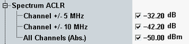

The energy that spills outside the designated radio channel increases the interference with adjacent channels and decreases the system capacity. The amount of unwanted off-carrier energy is assessed by the out-of-band emissions (excluding spurious emissions). These out-of-band emissions are specified in terms of the adjacent channel leakage power ratio (ACLR) and the spectrum emission mask.
The ACLR limits are defined in the configuration dialog.

For both power class 3 and power class 4 UE, the ACLR must not exceed –32.2 dB for channels ±1 and –42.2 dB for channels ±2. The limits must be met if the adjacent channel power is larger than –50 dBm (absolute limit).
The frequencies of adjacent channels are stated in the table below.
Adjacent channel | Adjacent channel frequency (single uplink carrier) | Adjacent channel frequency (dual uplink carrier) |
|---|---|---|
±1 | ±5 MHz from the center frequency | ±7.5 MHz from the center frequency of both carriers |
±2 | ±10 MHz from the center frequency | ±12.5 MHz from the center frequency of both carriers |
The table below lists the test requirements of specification 3GPP TS 34.121.
Characteristics | Refer to 3GPP TS 34.121, section... | Specified limit |
|---|---|---|
ACLR | 5.10 "Adjacent Channel Leakage power Ratio (ACLR)" 5.10A "Adjacent Channel Leakage power Ratio (ACLR) with HS-DPCCH" 5.10B "Adjacent Channel Leakage power Ratio (ACLR) with E-DCH" | <–32.2 dB (channels ±1) <–42.2 dB (channels ±2)1) |
Note 1) For compatibility with other R&S CMW measurements, we define the ACLR and the limits with a relative minus sign compared to the 3GPP specification.
ACLR values are available as absolute power levels (dBm) and as power levels relative to the carrier power (dB). The relative power levels are used to check relative limits, the absolute power levels to check absolute limits. The absolute power levels are derived from the relative power levels via a conversion procedure. For current values, the conversion is based on the current carrier power. For average and maximum values, it is based on the average carrier power.